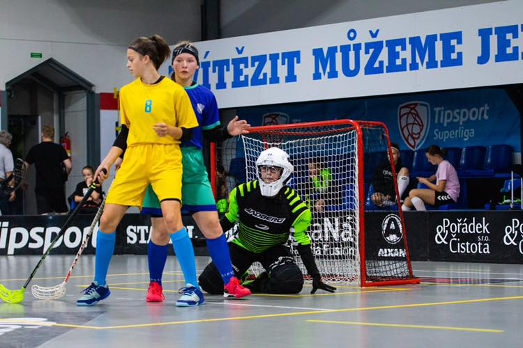

Výběry
⚫🔵 Výběry jsou za námi. Starší žákyně Tereza Matýsková a Nikol Pitáková spolu s ostatními spoluhráčkami z výběru Moravskoslezského a Olomouckého kraje padly ve finále až po nájezdech. Dorostenky vybojovaly mediale. Gratulujeme!🔵⚫

⚫🔵 Výběry jsou za námi. Starší žákyně Tereza Matýsková a Nikol Pitáková spolu s ostatními spoluhráčkami z výběru Moravskoslezského a Olomouckého kraje padly ve finále až po nájezdech. Dorostenky vybojovaly mediale. Gratulujeme!🔵⚫
⚫️🔵 Přijďte podpořit dorostence, aby si zaručeně udrželi svou poctivě vypracovanou 5. příčku. 🔵⚫️
⚫️🔵 Muži dnes hrají doma. Pro postup do play-off musí bodovat naplno. Bude potřeba každý hlas, těšíme se na
vás! 🔵⚫️